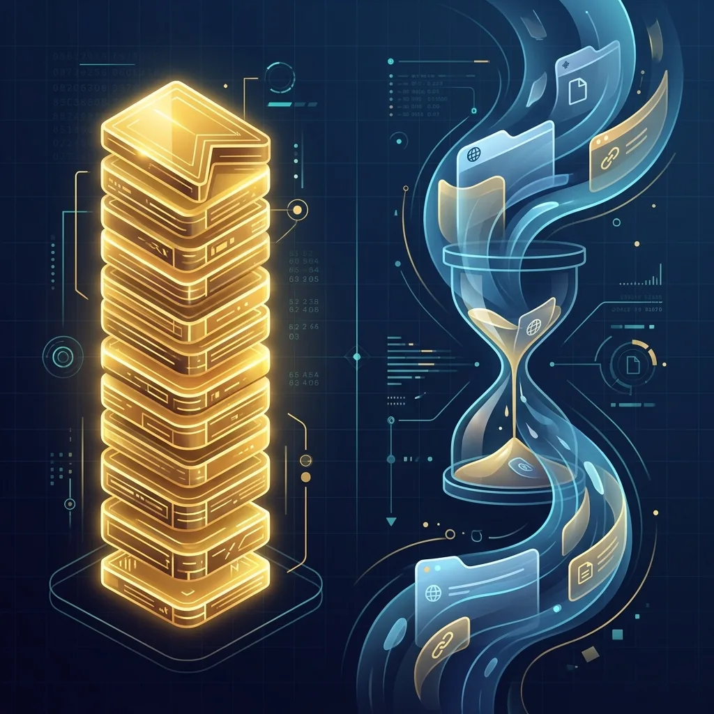

あなたのブラウザには、いくつのブックマークがありますか？
そして今、いくつのタブが開いていますか？
多くの人は「なんとなく」ブックマークを追加し、「なんとなく」タブを開きっぱなしにしています。でも少し立ち止まって考えると、この2つは まったく性質が異なるもの だとわかります。
📌 ブックマークは「資産」
ブックマークは、過去のあなたが「これは価値がある」と判断した情報です。
調べものの途中で見つけた良質な記事、仕事で何度も使う管理画面、いつか読もうと思ったレポート、気になったツールの公式サイト——。これらはすべて、あなたが時間をかけて見つけ出した情報の蓄積です。
つまりブックマークとは、あなたのデジタル資産。銀行口座の預金のように、使わなくても価値が保存されています。
しかし問題があります。
- フォルダが深すぎて どこに何があるかわからない
- 「あとで整理しよう」と思って 2年間放置
- 同じサイトを 3回ブックマーク している
- ブックマークバーが溢れて ファビコンしか見えない
資産は、管理しなければ 死に金 になります。使えない資産は、ないのと同じです。
🔥 タブは「資源」
一方、タブは 今この瞬間に使っているリソース です。
タブ1つにつき、Chrome は 50MB〜300MB のメモリ を消費します。10個開けば 500MB〜3GB。PCのメモリは有限な資源であり、タブはその資源を消費しています。
そしてメモリだけではありません。タブが消費する最も高価な資源は、あなたの注意力 です。
- 「あのタブどこだっけ？」と探す → 30秒〜1分のロス
- 関係ないタブが目に入って脱線 → 5〜15分のロス
- 「閉じたら困るかも」という不安で閉じられない → ストレス
1日に何度もこのロスが発生すると、1日30分以上の時間が溶けている 計算になります。年間に換算すると 約180時間。丸7日以上の時間が、タブの散乱で失われています。
⏳ 管理を怠ると、時間が溶ける
ブックマークとタブ——。この2つの管理を怠ることは、お金と時間の両方を無駄にしている ようなものです。
| ブックマーク（資産） | タブ（資源） | |
|---|---|---|
| 性質 | ストック型（貯まる） | フロー型（消費される） |
| 管理しないと | 使えない資産が溜まる | メモリと注意力が枯渇する |
| 失うもの | 情報へのアクセス速度 | 集中力と時間 |
| 理想の状態 | 必要な情報にすぐアクセスできる | 作業に必要なタブだけが開いている |
💡 「資産」と「資源」を同時に管理する方法
ブックマークとタブを別々に管理するのは非効率です。理想は ひとつの場所で両方を管理する こと。
ステップ1：タブをブックマークに変換する
「閉じたら困る」タブは、実は「資源」を「資産」に変換すべきサインです。閉じても戻れるようにブックマーク保存すれば、タブ（資源）を解放しつつ、情報（資産）は残ります。
ステップ2：プロジェクト単位でグループ化する
「仕事A」「仕事B」「調べもの」「プライベート」のようにグループを作り、関連するブックマーク＆タブをまとめます。脳の切り替えコストが大幅に減ります。
ステップ3：使わないグループは閉じる
今作業していないプロジェクトのタブはすべて閉じます。ブックマークとしてグループに残っているので、ワンクリックで復元できます。これでメモリが解放され、注意力も集中できます。
🔧 LB TAB Layers という解決策
この「資産と資源を同時に管理する」ことに特化したのが LB TAB Layers です。
- 📂 タブを Chrome ブックマークに自動保存 → 資源を資産に自動変換
- 📁 プロジェクトごとに レイヤーグループ で整理 → 使わないグループは閉じてメモリ解放
- 🔍 保存した資産を 日本語ファジー検索 + AI検索 で瞬時に発見
- 🔔 Gmail・Slack の 通知バッジ でタブを開かずに未読確認 → 不要なタブを減らす
- 📌 よく使うサイトは ピンバー で常駐 → ブックマークを探す時間をゼロに
しかも全てが サイドパネルに常駐。作業画面を離れずに、資産の確認と資源の管理ができます。
まとめ
ブックマークは資産。過去に見つけた価値ある情報の蓄積。
タブは資源。今この瞬間に消費しているメモリと注意力。
どちらも管理しなければ、時間が溶けます。1日30分、年間180時間——それを取り戻すかどうかは、管理の仕組みを持つかどうかにかかっています。
「閉じても消えない安心感」があるだけで、タブの使い方は劇的に変わります。